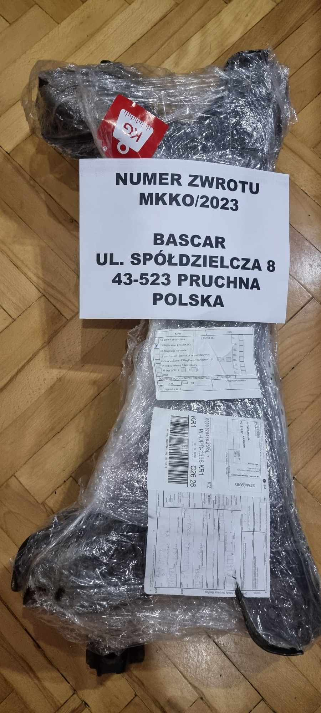
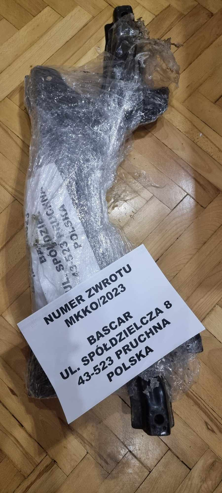
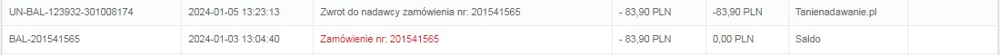
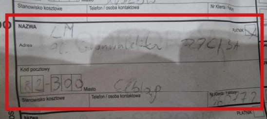

ul. Żołnierzy i Armii Wojska Polskiego 10/B
81-383 Gdynia
UWAGA OSZUST !!!
OPIS SYTUACYJNY
W dniu 4.01.2024 pomiędzy godz. 9-11 kurier z firmy DPD miał odebrać
przesyłkę i wystawić list ręczny, opłacony dodatkowo 30 zł!
NIE MIAŁEM MOŻLIWOŚCI
WYDRUKOWANIA LISTU PRZEWOZOWEGO i dlatego zdecydowałem się dopłacić za
dodatkową usługę 30 zł (opcja: "Nie mam możliwości wydrukowania listu przewozowego"
- ZAZNACZONE NA POTWIERDZENIU NA CZERWONO) WYSTAWIENIA LISTU
RĘCZNEGO przez kuriera.
Opis spakowania przesyłki
4.01.2024 BYŁ OSTATECZNYM TERMINEM NADANIA ZWROTU. Przesyłka została
oklejona na kartce formatu A4 z WIDOCZNYM ADRESEM ODBIORCY i numerem zwrotu z
allegro (Zdjęcie przesyłki i kopia kartki z opisem poniżej). Kartka została umieszczona w
koszulce w widocznym miejscu, aby nie uległa zniszczeniu i została przymocowana przeźroczystym
strechem do przesyłki. Kopia kartki na zdjęciu, taka sama kartka jest pod strechem.


Dodatkowa opłata za zwrot przesyłki
Firma TanieNadawanie.pl naliczyła sobie dodatkowe 15 zł za zwrot przesyłki bo adresat nie odebrał. Dziwne było by, żeby odebrał jak pod zły zdres wysłali! W tym samym dniu kolejny mail, że jednak nie 15 zł tylko 100% wartości przesyłki (83,90 zł). Takim to sposobem na stronie zrobiło mi się saldo minusowe na tą kwotę. Aby złożyć reklamację trzeba uregulować saldo i tak jak już wspominali inni klienci codzienne nękanie telefonami z działu windykacji. Dodam, że ludzie dzwoniący nie byli nawet zaznajomieni ze sprawą. Kolejny przejaw pseudoprofesjonalizmu ze strony firmy TanieNadawanie.pl.

Ustalenie winy
Z MOJEJ STRONY WSZELKIE FORMALNOŚCI ZOSTAŁY DOPEŁNIONE !
Dziś tj. 8.01.2024 przesyłka została zwrócona do warsztatu skąd była odbierana
przez kuriera, czyli NIE ZOSTAŁA DOSTARCZONA DO ADRESATA Z WINY FIRMY
KURIERSKIEJ! Powodem jest ŹLE WPISANY ADRES PRZEZ KURIERA na liście przewozowym.
Wpisany adres jest do Elbląga, a przesyłka miała zostać wysłana do miejscowości Pruchna, woj.
śląskie, gdzie adresat czekał na zwrot. Nie mam pojęcia skąd kurier wziął adres do Elbląga? (zdjęcie
w załączniku) Nie miałem możliwości przypilnowania kuriera przy wystawianiu listu, ponieważ
wysyłka była z warsztatu motoryzacyjnego ze względu na wagę i gabaryt, gdzie naprawiano mój
samochód.

Dalsza część oszustwa
Zaproponowano mi zwrot samej kwoty za przesyłkę naliczone bezprawnie. Zamiast kwoty za straconą część i koszty transportu. Co więcej pomimo mojej wyraźnej prośby o wypłatę na podane konto bankowe, te pieniądze zwrócone zostały na saldo strony tanienadawanie.pl co ogranicza moje możliwości dysponowania tymi środkami. W przypadku wypłaty tych środków powołali się na swój regulamin i konieczność wypełnienia i podpisania oświadczenia i przesłania go pocztą. Opłata operacyjna za zwrot środków wynosi 10 zł. Jakaś paranoja. Oszukują ludzi na każdym kroku. Nawet po rozpatrzeniu reklamacji niezgodnie z żądaniem nadal szukają sposobu aby uprzykrzyć życie klientowi.